UDN
Search public documentation:
ContentBrowserReferenceJP
English Translation
中国翻译
한국어
Interested in the Unreal Engine?
Visit the Unreal Technology site.
Looking for jobs and company info?
Check out the Epic games site.
Questions about support via UDN?
Contact the UDN Staff
中国翻译
한국어
Interested in the Unreal Engine?
Visit the Unreal Technology site.
Looking for jobs and company info?
Check out the Epic games site.
Questions about support via UDN?
Contact the UDN Staff
UE3 ホーム > 「Unreal」エディタとツール > コンテントブラウザのリファレンス
コンテントブラウザのリファレンス
機能
- 閲覧およびゲームにあるすべてのアセットでインタラクト：ロードおよびアンロード
- ロード/アンロードされたアセットの検索
- テキストフィルタ: 名前、パス、タグまたはタイプを指定してアセットを検索します。検索対象からキーワードを除外するには、そのキーワードの前に '-' を付けます。
- 拡張フィルタ: オブジェクトタイプおよびタグの組み合わせを使って、アセットを参照します。
- 頻繁に使用するオブジェクトタイプをお気に入りに追加します。
- パッケージをチェックアウトせずに、ロード/アンロードされたアセットを整理
- タグを作成します。
- アセットにタグを適用します。
- 将来の使用に備えて、プライベートコレクション (Collection) を作成しアセットを格納します。
- 共有コレクション (Shared Collection) を作成し、関心のあるアセットを同僚と共有します。 * 開発支援 :
- 問題のあるアセットを表示します。
概念
- タグ: タグとは、「アセットに付ける」ことができる文字列です。アセットに適用できるタグ数には上限がありません。タグによってゲーム内のアセットを簡単に見つけることができます。タグの作成に関する制約はなく、アセットの編成方法はユーザーが制御できます。
- My Collections（マイコレクション): コレクションはアセットを格納する場所で、各アセットのデータはパッケージファイルに属しますが、アセットは任意の数のコレクションに所属させることができます。My Collections はプライベートコレクションなので、 作成したユーザーにしか見えません。
- Shared Collections（共有コレクション): Shared Collections はプライベートのコレクションとは異なり、チームメンバー全員が参照できます。
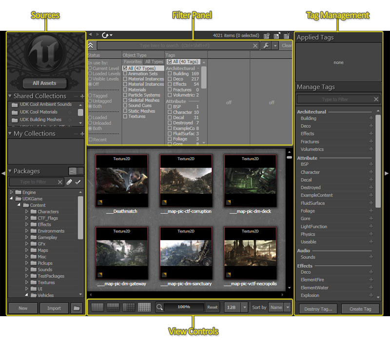
コンテンツブラウザ内では、アセットは左から右、上から下に流れていると考えることができます。アセットは、 Sources Panel (ソースパネル) で選択される アセットソース (所属先) (コレクションまたはパッケージ) から構成されています。集められたこれらのアセットが Filter Panel (フィルタパネル) にかけられ、フィルタを通過したアセットが Asset View (アセットビュー) に表示されて参照できるようになります。Sources

Packages View
通常、プロジェクトには多くのパッケージが含まれます。Packages View は、現在取り組んでいるパッケージの情報を保持し続けるためのツールです。 テキストフィルタに加えて、修整済みのパッケージおよび現在チェックを入れているパッケージを表示できます。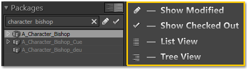
コンテキストメニュー参照
- Bulk Import :パス内のディレクトリ構造体により再帰することで、指定したディレクトリパスにあるファイルをすべてインポートします。パッケージおよびグループを自動的に作成し、ディレクトリ構造体がどうレイアウトされているかを基に正しいパーケージにファイルを置きます。Bulk Import（バルクインポート）の実行の方法については バルク インポータ ページをご覧ください。
Filter Panel
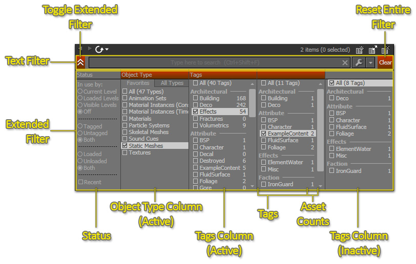
表示コントロール
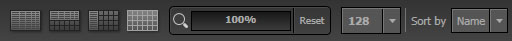
アセットの表示方法を変更します。| | 詳細リスト表示 |
| 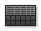 | 詳細およびサムネイル: 水平分割 |
| | 詳細およびサムネイル: 垂直分割 |
| | サムネイル表示 |
| | 左/右にドラッグしてズームレベルを変更します |
| 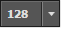 | サムネイルのサイズを変更します |
| | アセットのソートを変更します。 |
タグパネル
 タグの作成および破棄は、 [Create Tag] (タグを作成) および [Destroy Tag] (タグを破棄) ボタンをクリックして行います。タグを作成するには、 [Create Tag] をクリックしてタグの名前を入力します。
タグを破棄するには、 [Destroy Tag] ボタンをクリックします。 タグの横にある '+' 記号がすべて '-' に変わり、 クリックするとタグが破棄されることを示します。
注意: 不慣れなユーザーがタグをうっかり破棄したり (その結果、すべてのアセットからタグが除外されたり) しないようにするために、安全策が講じられています。デフォルトでは、ユーザーにはタグの作成/破棄権限は与えられていません。以下の設定により、アート主任やテクニカルアーティストにタグの作成権限を設定してもらう必要があります。:
タグの作成および破棄は、 [Create Tag] (タグを作成) および [Destroy Tag] (タグを破棄) ボタンをクリックして行います。タグを作成するには、 [Create Tag] をクリックしてタグの名前を入力します。
タグを破棄するには、 [Destroy Tag] ボタンをクリックします。 タグの横にある '+' 記号がすべて '-' に変わり、 クリックするとタグが破棄されることを示します。
注意: 不慣れなユーザーがタグをうっかり破棄したり (その結果、すべてのアセットからタグが除外されたり) しないようにするために、安全策が講じられています。デフォルトでは、ユーザーにはタグの作成/破棄権限は与えられていません。以下の設定により、アート主任やテクニカルアーティストにタグの作成権限を設定してもらう必要があります。: - MyGameEditorUserSettings.ini に、 [ContentBrowserSecurity] セクションを追加します。
- このセクションの下で、 bIsUserTagAdmin=True と設定します。
- これは本当のセキュリティシステムではなく、人々が誤ってデータを破棄しないようにするだけのものです。
タググループ
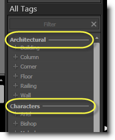
 これらのグループはタグフィルタにも表示されます。
これらのグループはタグフィルタにも表示されます。
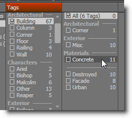
アセット履歴の追跡
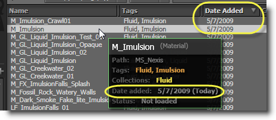
コレクションのコピーおよび名前変更
コレクションのコピーや名前の変更も簡単で、プライベートコレクションを共有コレクションに昇格したり、その逆も可能です。コレクションを右クリックしてメニューを開くだけです。
検索対象から除外
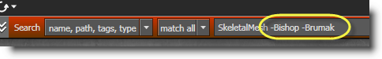
サムネイルの並べ替え

複数の Content ブラウザウィンドウ
 アセットが複数のブラウザで選択されているときは、アクティブなウィンドウでは選択項目が実線で囲まれ、他のブラウザでは点線の境界線になります。これにより、 [Fill Property from Browser] (ブラウザからプロパティ値を挿入) などのアクションを実行する場合に有効な選択項目を区別できます。
アセットが複数のブラウザで選択されているときは、アクティブなウィンドウでは選択項目が実線で囲まれ、他のブラウザでは点線の境界線になります。これにより、 [Fill Property from Browser] (ブラウザからプロパティ値を挿入) などのアクションを実行する場合に有効な選択項目を区別できます。
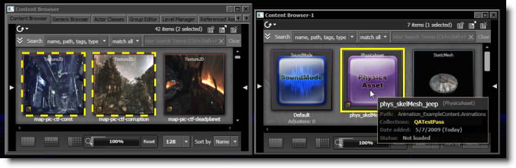
フィルタパネル
TextFilter (テキストフィルタ)
テキストフィルタは、ほどんどのフィルタリングタスクに使用できます。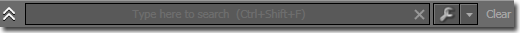
検索したいキーワードを入力するだけで検索できます。例えば、「explosion」という単語を入力してみましょう。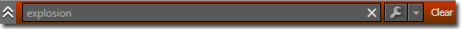
検索語句を追加することによって、さらに検索の精度を高めることができます。 - のプレフィックスをつけることによって、語句を検索から除外することができます。例えば、explosion dust -electric で検索をかけると、 パッケージ名またはグループ名 あるいは、 タグ 、 型 、アセット自身の 名前 のどこかに、explosion と dust の語がありながら electric という語がないアセットだけが表示されることになります。このような動作は、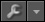
をクリックして制御することができます。これによって、拡張したり、オプションの 1 つ以上を切り替えることが可能です。 以下のオプションがあります。| 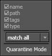 | Name (名前) | 検索対象にアセット名を含めるかどうかを指定します。このオプションを有効にすると、例えば、「expl」というキーワードで「M_FX_ExplosionFramed_Alpha」という名前のアセットが見つかります。 |
| Path (パス) | このアセットが属するパッケージまたはグループ名を検索対象に含めるかどうかを指定します。このオプションを有効にすると、返される結果の数が多くなります。例えば、「FX_VehicleExplosions.Materials.M_FX_ExplosionFramed_Alpha」というアセットは、"vehi"、"expl"、"mat"、"alpha"、その他多数のキーワードに一致します。 | |
| Tags (タグ) | アセットに適用されるタグを検索対象に含めるかどうかを指定します。例えば、「Explosion」というタグの付いたアセットは、「Explosion」というキーワードはもちろん、「expl」などのキーワードとも部分一致します。 | |
| Type (タイプ) | アセットタイプを検索対象に含めるかどうかを指定します。例えば、「ParticleSystem」というキーワードには、すべてのパーティクルシステムが一致します。 |
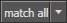
をクリックし、オプションから [Match Any] (いずれかに一致) または [Match All] (すべてに一致) を選択します。| 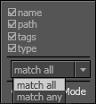 | Match All | 選択した検索フィールド (名前、パス、タグ、タイプ) のいずれかに、すべての指定キーワードを含むアセットを表示します。 |
| Match Any | 選択した検索フィールドのいずれかに、1 つまたは複数のキーワードを含むアセットを表示します。 |
拡張フィルタ
拡張フィルタ パネルを使用すると、キーワードを入力しなくても、表示されるアセットをさらに絞り込むことができます。フィルタは左から右に適用されるので、左側でフィルタ設定を変更すると右側で使用できるオプションが変化します。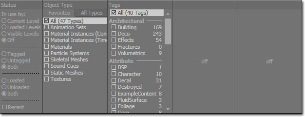
一番左の [Status] フィルタでは、表示するアセットを、そのステータス (ロード済み、ロードされていない、タグ付き、タグ無し) により制御します。例えば、現在ロードされているアセットだけ表示するには、[Loaded] を選択します。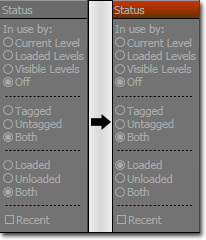
ここで、環境メッシュをレベルに追加しようとしている場合を想定してみます。空のフィルタから開始します。 Object Type（オブジェクトタイプ） のコラムから、Static Mesh（静的メッシュ）を選択し、 Static Meshes（静的メッシュ） だけを表示します。各タグのとなりの数字は更新されて、そのタグが付いているアセットがいくつ残っているかを示します。例えば、 Character のタグが付いているアセットの数は、フィルタリングされて 10 個から 1 個に下がります。また、 Destroyed のタグのアセット数は、7 個から 6 個に減っています。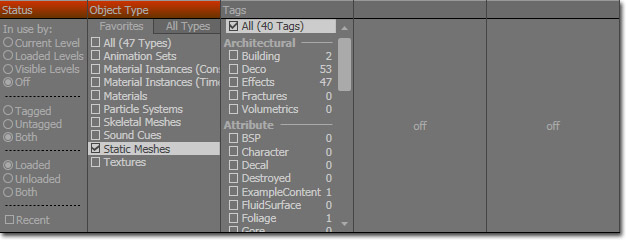
Deco および Scenery タグを選択して、Deco および Scenery メッシュのみを表示してみます。次のタグのコラムがアクティベートされて、更新されたアセット数をともなったタグのセットが、さらに精度が上がった状態で表示されていることに注目してください。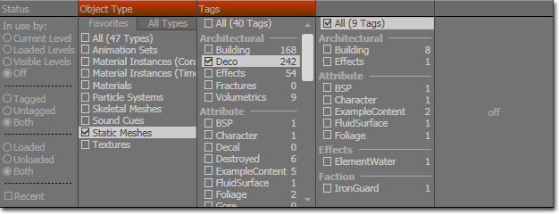
次に、 Building と Foliage（葉）を選択し、Building と Foliage のメッシュを表示します。最終のタグリストがアクティベートされています。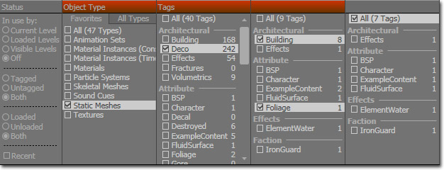
潜在的な問題のフィルタリング
孤立したアセット (Quarantined Assets)
このタグには、開発者によって孤立させられたアセットがすべて含まれています。
不適切な UV セットをともなった静的メッシュ (Static Meshes with Bad UV Sets)
このタグには、オーバーラップしている UV 座標をともなった静的メッシュが含まれています。これによって、ライトマッピングを実行しようとする際に、問題を引き起こしているメッシュを見つけやすくなります。ただし、故意の場合もあります。それは、メモリ節約のために、故意に同じテクスチャ空間を共有しようとしている場合です。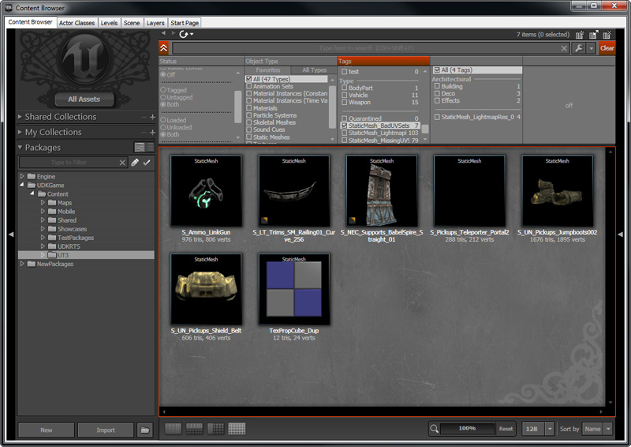
静的メッシュを開くと、UV セットの 1 つに、オーバーラップしている座標があると分かります。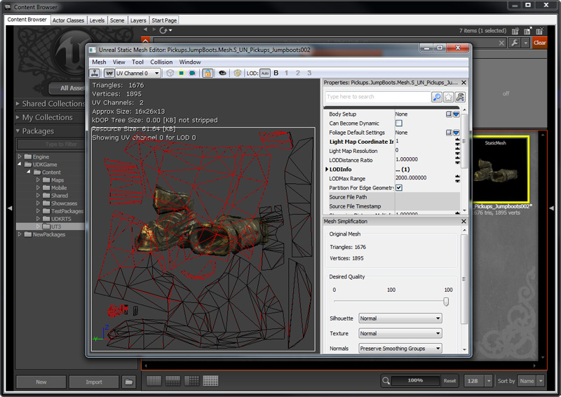
ライトマップの解像度が 0 である静的メッシュ (Static Meshes with Lightmap Resolution at 0)
このタグには、デフォルトのライトマップの解像度が 0 にセットされている静的メッシュが含まれています。これによって、ライトマッピングを実行しようとする際に、問題を引き起こしているメッシュを見つけやすくなります。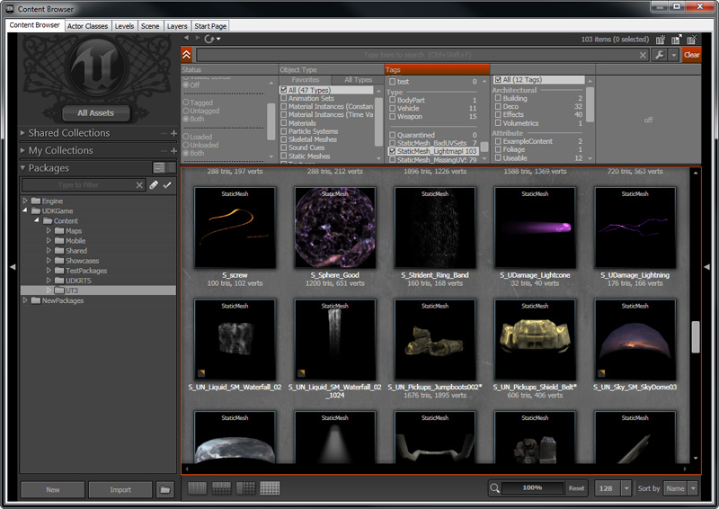
静的メッシュを開くと、LightMapResolution が 0 にセットされていることが分かります。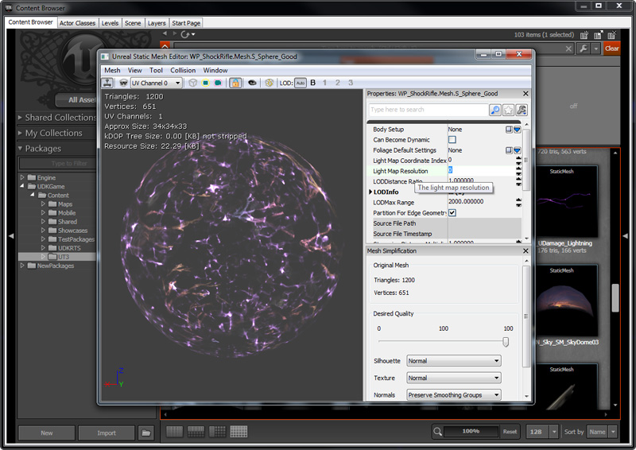
UV セットが欠けている静的メッシュ (Static Meshes with Missing UV Sets)
このタグに含まれている静的メッシュは、ライトマッピング用の固有な UV 座標の 2 つ目のセットが欠けています。ただし、コンテンツ作成者が故意に行う場合もあります。UV 座標の最初のセットがすでに、ライトマップのために固有なものとなっている場合です。 静的メッシュを開くと、UV 座標に 1 つのセットしかないことが分かります。
静的メッシュを開くと、UV 座標に 1 つのセットしかないことが分かります。

孤立モード (Quarantine Mode)
 これでコンテンツブラウザが Quarantine (隔離) モードになりました。
これでコンテンツブラウザが Quarantine (隔離) モードになりました。
 アセットを隔離するには、アセット上で右クリックしてコンテンツメニューを出します。Toggle Quarantined (隔離の切り替え) を左クリックして、隔離の有効 / 無効を切り替えます。ショートカットキーとして Ctrl+Q を使用しても、この動作を実行することができます。
アセットを隔離するには、アセット上で右クリックしてコンテンツメニューを出します。Toggle Quarantined (隔離の切り替え) を左クリックして、隔離の有効 / 無効を切り替えます。ショートカットキーとして Ctrl+Q を使用しても、この動作を実行することができます。
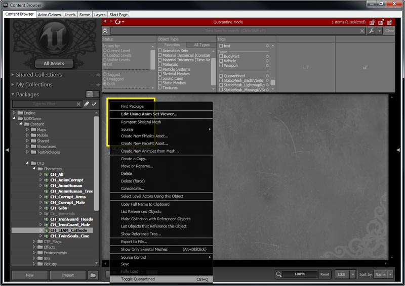
これでアセットが隔離されました。 コンテンツブラウザを通常の状態に切り替えると、隔離されたアセットが非表示になりました。
コンテンツブラウザを通常の状態に切り替えると、隔離されたアセットが非表示になりました。
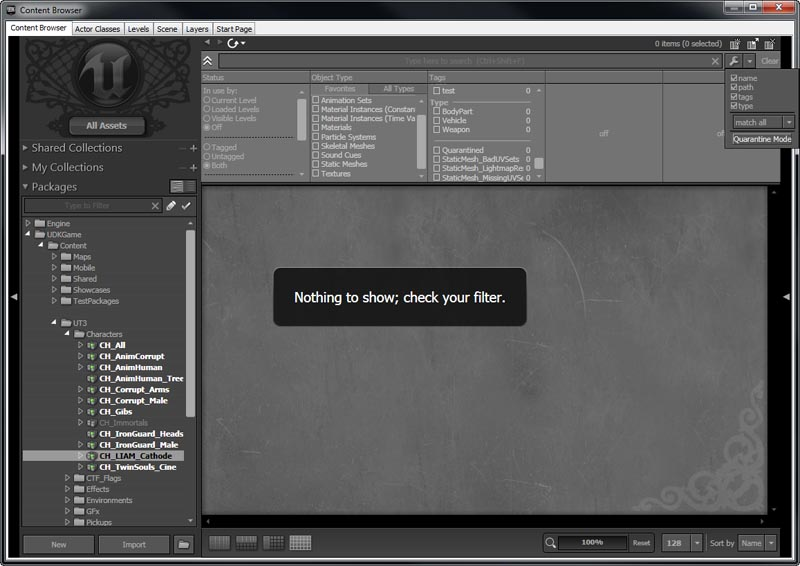
アセットを隔離した後は、隔離削除コマンドレットを使用して、自動的かつ安全にこれらのアセットを削除することができます。このコマンドレットに関する詳細については、 DeleteQuarantinedContent コマンドレット のページを参照してください。クイックリファレンス
| アクション / ホットキー | 効果 |
|---|---|
| Ctrl+Shift+F | テキスト検索テキストボックスに ( UnrealEd の任意の場所から) フォーカスを移動します。 |
| RMB + ドラッグ | サムネイル表示をパン移動します。 |
| スペースバー | 選択したアセットをプレビューします (現在はサウンドにのみ適用されています)。 |
| Ctrl+A | アセットをすべて選択します。 |
| Ctrl+Shift+A | アセットソースを AllAssets に設定します。 |
| Shift+ TreeView で矢印をクリック | 反復的に展開/折りたたみます。 |
| B (押し下げ) | ボタンが押し下げられている間、アセットサムネイル周囲の色分けされた境界を拡大表示します。 |